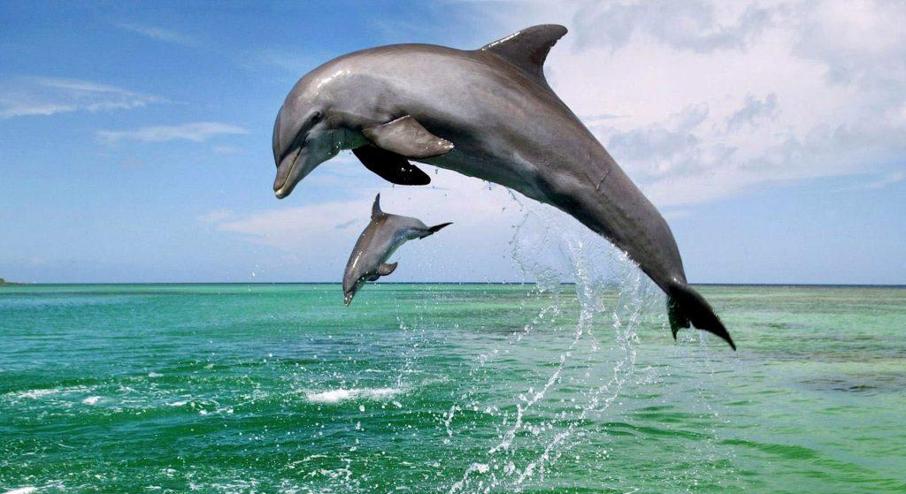
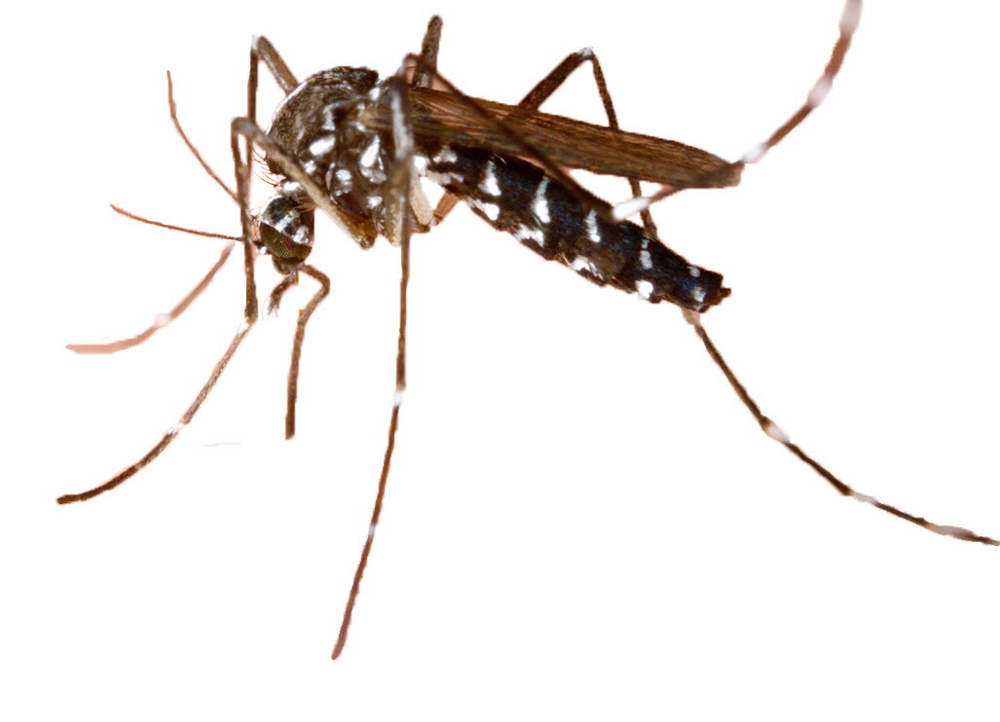

Le plus rapide : Le Poisson Voilier allant jusqu’à 110km/h. Il est de la même espèce que l’Espada. Son nom
vient de sa grande nageoire en forme de voile.
Le plus dangereux : Le Grand Requin Blanc, une taille de 6m de longueur, chasse généralement des tortues,
thons et crétacés. Chasse le sang. Cette espèce est menacée par la surpêche et par la pollution.
Le favori : Le dauphin ; il est intelligent et capable de communiquer par ultrason. Il ressemble à un requin
mais semble plus apprécié et plus gentil.

Animaux Sur Terre
Le plus rapide : Le Guépard, il peut aller jusqu’à environ 120km/h lors de ses chasses, il peut courir jusqu’à
en mourir (mais sa vitesse diminue petit à petit). C’est un félin sauvage qui chasse généralement par groupe de
2 ou 3. Il ressemble à un léopard avec des larmes noires.
Le plus dangereux : Le Cobra Royal, il a un des venins les plus dangereux du monde. Ses morsures sont
mortelles, il vaut mieux éviter de se faire mordre. Il a une sorte de cape.
Le favori : Le Loup, c’est un canidé connu aussi comme le cousin du chien. Il fascine les humains qui le
mettent dans leurs mythes, légendes et qui s’en inspirent même dans l’art. Ils vivent en meute et se
transforment les soirs de pleine lune (restez chez vous).
Animaux Du Ciel
Le plus rapide : Le Faucon Pèlerin est l’animal le plus rapide au monde, il peut faire des descentes en piqué
lors de ses chasse jusqu’à 390km/h. Il a des yeux perçants et voit très bien de loin
Le plus dangereux : Le Moustique est la cause de plus de 725000 morts par an, il est à l’origine d’un grand
nombre d’épidémies et ne sert à rien à pas à causer des catastrophes.

Le favori : Le Condor est un des oiseaux les plus majestueux, connu comme étant le plus grand oiseau volant du
monde avec plus de 3m de longueur, il pèse de 7.5 à 15kg.